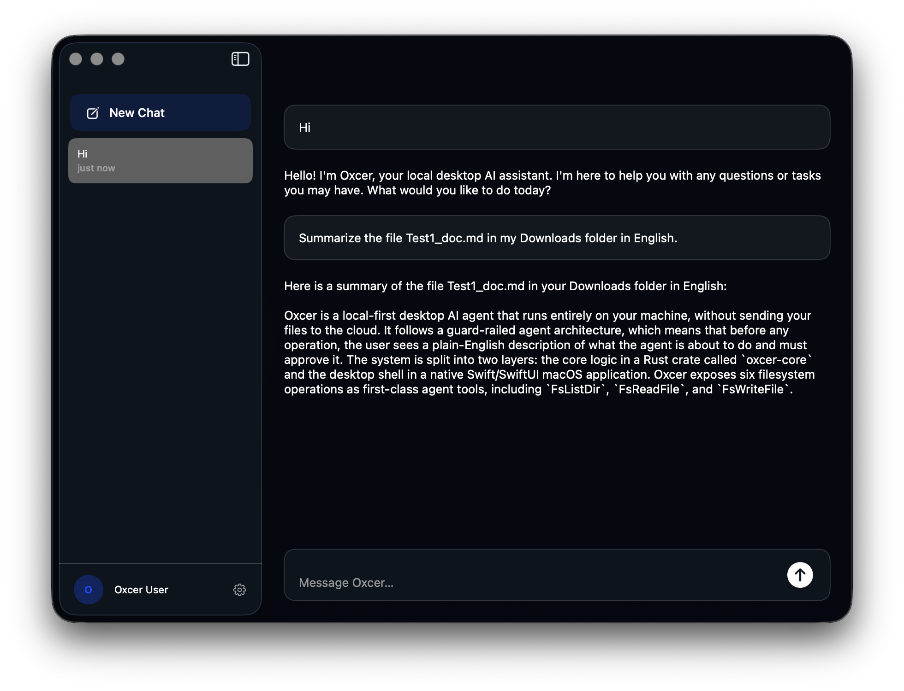

Local-first document intelligence for non-developers.
The terminal stays hidden. Your documents stay local.
One click. That's it.
No terminal setup script. Download and open.
Until then, build from source on GitHub.

"Summarize the file Test1_doc.md in my Downloads folder in English." It does. Locally.
Philosophy
01
The user never opens a terminal. llama.cpp runs inside the app. The shell exists internally as a tool the agent can call, not a user-facing surface.
02
The agent does not silently mutate the filesystem. Every write, delete, rename, or move surfaces an approval before execution. Read-only operations proceed without interruption.
03
On month six, the cost of switching is the loss of a context graph that took six months to build and exists nowhere else. Not lock-in by contract. Lock-in by value.
04
The tool learns your vocabulary, your files, your patterns. Six months in, you have something no other tool can replicate. That is the point.
v0.1 — now
Llama 3 8B Q4_K_M via llama.cpp + Metal. Full GPU offload on Apple Silicon. No API key required.
Name the file, name the folder. The agent reads it and summarizes it. No file picker, no model selection.
Every write, delete, and shell operation requires explicit approval. Read-only ops run silently.
Credentials, API keys, JWTs, and PEM keys are redacted before they reach any LLM call or log output.
OpenAI, Anthropic, Gemini, and Grok are available as optional backends. Off by default.
The full tool plan is built upfront, no ReAct loop. Deterministic, auditable, testable.
v1.0 — coming
Open source · MIT
White paper available. Source code on GitHub.